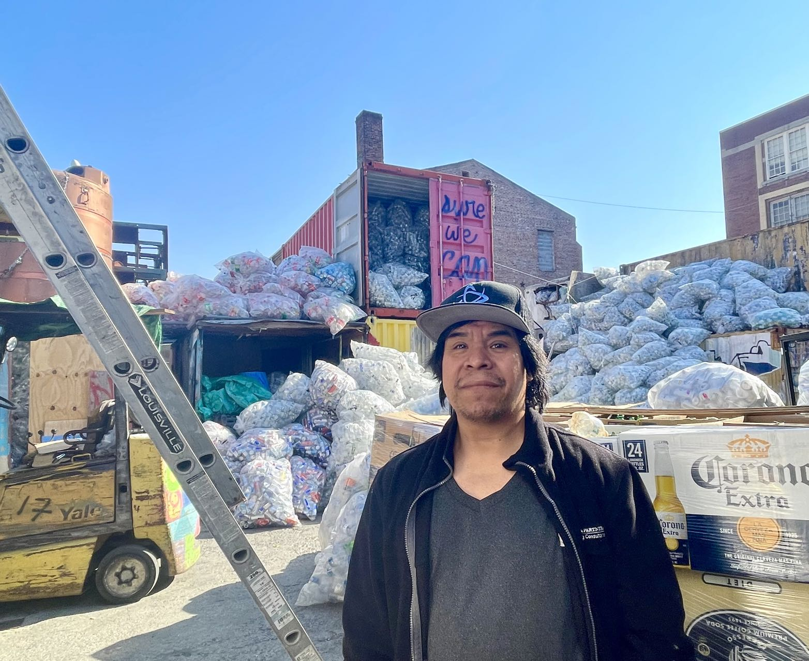

Trash Containerization Plan Leaves New York Canners Uncertain
Where is New York canners’ future under the trash containerization plan?
By Zhenjia Zhang
Wednesday, November 27
Giant plastic bags full of cans and bottles are stacked like mountains in the yard of Sure We Can, a non-profit recycling center in Williamsburg, Brooklyn. There is a slightly pungent smell. As Pedro Romero, a 35-year-old recycler, carried two bags to the truck in front of the center as part of his daily routine, the bags and cans reverberated with a crisp clang.
Romero has been doing this work for 13 years with his 53-year-old wife, Josefa Marin, at Sure We Can to support their families. They are independent recyclers, also known as canners.

Pedro Romero at the redemption center, Credit: Zhenjia Zhang
Romero and Marin start working around 7:30 a.m. and go over the neighborhood’s trash bins to see if they can find any still, sparkling water, soda, and beer containers. Then, they go back to the redemption center to sort them out by companies and turn them in. They get paid right away, 5 cents for each container, in cash.
The value is set by the New York Returnable Container Act, also known as the Bottle Deposit Law, which was enacted in 1982.
“I make two thousand a month with my wife together, it’s not enough for us to pay for the rent and groceries, sometimes we work more hours to make money,” Romero said.
Now, canners’ livelihood could be threatened. The New York City Department of Sanitation announced “The Future of Trash” containerization plan in April. The rules, which go into effect on Nov. 12, require buildings with one to nine residential units to place their trash out for collection in a bin of 55 gallons or less with a secure lid.
This move might deprive canners of the opportunity to pick up cans and could be a huge financial blow to them.
Officials said the canners will still be able to operate “The city is not requiring recycling materials to be containerized, and the bins are not locked,” Vincent Gragnani, press secretary at the New York City Department of Sanitation, said in an email.
But the change still leaves canners with concerns.
“If the bins are not locked, there are logistical challenges, different bins, and systems, less consistency also means obstacles for canners,” Ryan Castalia, executive director at Sure We Can, said.
Last year, Sure We Can canners redeemed over 12 million containers, according to their statistics, which shows the significant contributions canners make to the solid waste management system.
The industry revenue of “waste management and remediation services” in the United States has grown steadily from 80 billion dollars to 145 billion dollars from 2010 to 2024. according to Statista, a German online platform that specializes in data gathering and visualization.
“Although we are excluded workers, we are doing a very good job!” Marin said in Spanish through a translator.
They are contributors, but they are not recognized as recycling stakeholders, not to mention having the ability to influence the policymakers.
As containerization moves forward, it might pose an even greater challenge for canners. “Next Spring, move forward with containerization for higher-density residential buildings, which account for 30 percent of the city’s trash,” Gragnani said.
This could leave canners’ future uncertain.
“If all the material is locked away, we would do a public engagement campaign, asking people to leave redeemable material outside of those containers,” Castalia said.